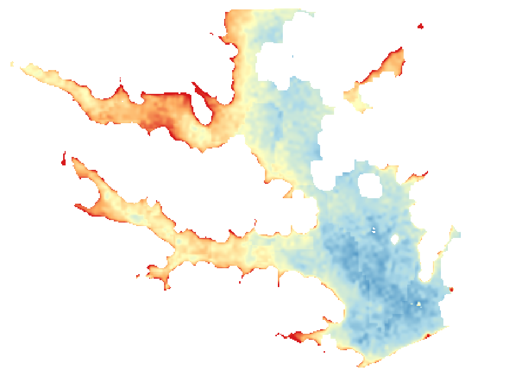

LakeScope › TX
Lake Conroe today
Updated 2026-11-07 - Atlas Labs
Algae likely, 71°F water, level steady, near normal, calm this morning.
Water level
199.29 ft
USGS gauge 08067600 - 2026-11-07
7-day trend: steady (-0.08 ft). Compared with normal for this date: -0.6 ft (same weeks, 2016-2025).
Water clarity and algae
Algae likely Last clear view: over a week ago. 2 cloudy passes since.
Surface temperature
71°F
seen from space on 2026-11-04

Weather, next 3 days
| Day | Sky | High / low | Wind | Rain |
|---|---|---|---|---|
| Saturday | Mostly Cloudy | 74 / 57°F | 10 mph E | 10% |
| Sunday | Chance Rain Showers | 69 / 58°F | 5 mph NE | 42% |
| Monday | Slight Chance Rain Showers | 68 / 56°F | 5 mph E | 22% |
Sunrise 06:41 - sunset 17:29 - Waning crescent. National Weather Service.
Get the LakeScope app: alerts and the 3-D view of Lake Conroe